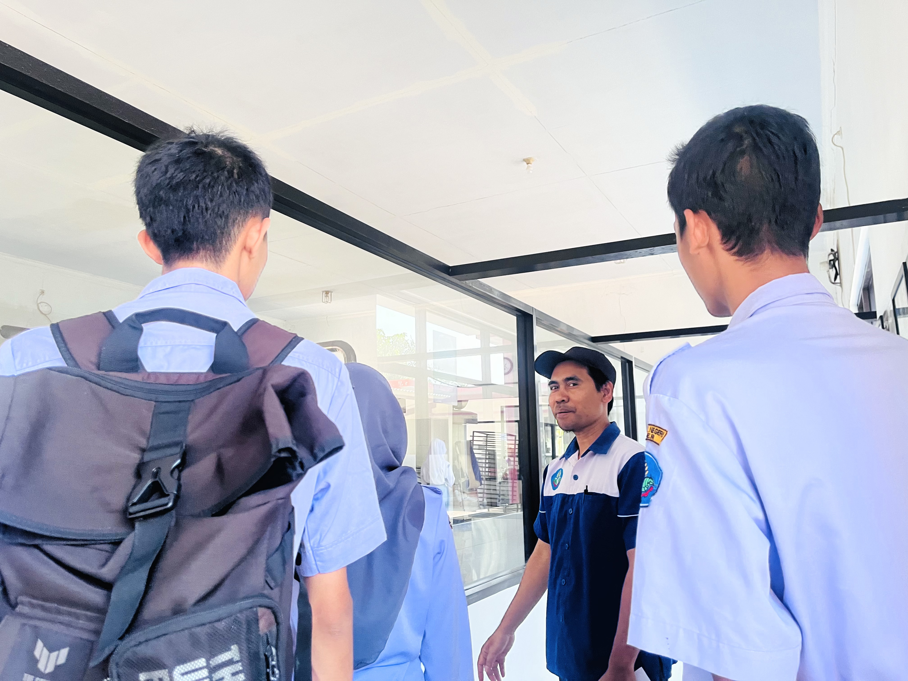
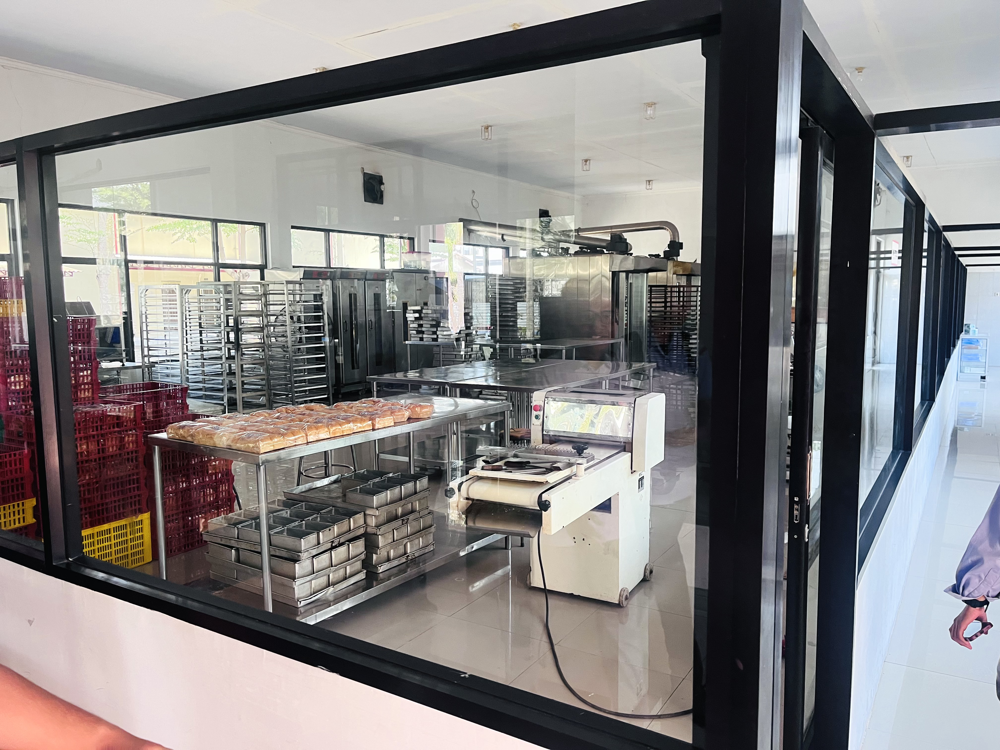

Pendidikan
mendukung praktikum, PKL, dan kegiatan akademik.
CERITA RASA KARYA
TEFA Bakery & Coffee adalah unit produksi sekaligus tempat belajar di bawah Politeknik Negeri Jember, yang membuat roti dan aneka pangan dengan standar industri.
Kenali perjalanan kami
SEJARAH KAMI
Berawal dari Laboratorium Pengolahan Pangan (1999), unit ini beberapa kali berganti nama, yaitu Unit Jasa Industri dan Aneka Pangan (2003), UPT. Aneka Pangan dan Produk Beku (2011), UPT. Makanan dan Minuman (2015), UPT. Pengolahan dan Pengemasan Produk Pangan (2020), dan sejak Juli 2022 menjadi UPA. Pengembangan Pengolahan dan Pengemasan Produk Pangan.
SEBUAH PERJALANAN
Berdirinya laboratorium pengolahan pangan.
Unit Jasa Industri dan Aneka Pangan.
UPT. Aneka Pangan dan Produk Beku.
UPT. Makanan dan Minuman.
UPT. Pengolahan dan Pengemasan Produk Pangan.
UPA. Pengembangan Pengolahan dan Pengemasan Produk Pangan.
YANG KAMI PERCAYA
Hal-hal sederhana yang menjadi pegangan kami, dari dapur sampai ke meja Anda.
mendukung praktikum, PKL, dan kegiatan akademik.
melayani riset dosen dan mahasiswa.
melayani masyarakat lewat produk dan informasi.
DI BALIK DAPUR KAMI
gudang bahan kering, gudang kemasan, ruang persiapan bahan, gudang peralatan, dan ruang produksi dengan mixer, oven, dan proofer.
Jelajahi peluang bersama
MARI BERTUMBUH BERSAMA